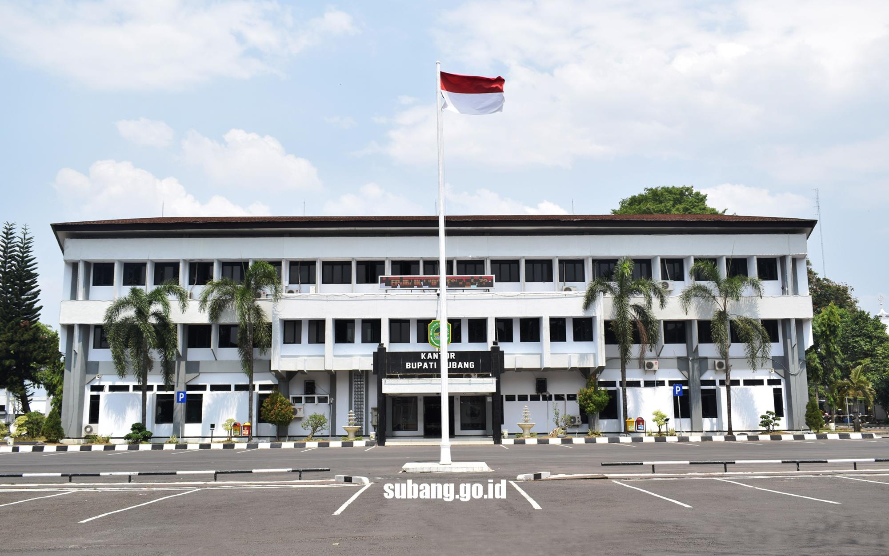

Sejarah
Bukti adanya kelompok masyarakat pada masa prasejarah di wilayah Kabupaten Subang adalah ditemukannya kapak batu di daerah Bojongkeding (Binong), Pagaden, Kalijati dan Dayeuhkolot (Sagalaherang). Temuan benda-benda prasejarah bercorak neolitikum ini menandakan bahwa saat itu di wilayah Kabupaten Subang sekarang sudah ada kelompok masyarakat yang hidup dari sektor pertanian dengan pola sangat sederhana. Selain itu, dalam periode prasejarah juga berkembang pula pola kebudayaan perunggu yang ditandai dengan penemuan situs di Kampung Engkel, Sagalaherang.
Pasca runtuhnya kerajaan Pajajaran, wilayah Subang seperti halnya wilayah lain di P. Jawa, menjadi rebutan berbagai kekuatan. Tercatat kerajaan Banten, Mataram, Sumedanglarang, VOC, Inggris, dan Kerajaan Belanda berupaya menanamkan pengaruh di daerah yang cocok untuk dijadikan kawasan perkebunan serta strategis untuk menjangkau Batavia. Pada saat konflik Mataram-VOC, wilayah Kabupaten Subang, terutama di kawasan utara, dijadikan jalur logistik bagi pasukan Sultan Agung yang akan menyerang Batavia. Saat itulah terjadi percampuran budaya antara Jawa dengan Sunda, karena banyak tentara Sultan Agung yang urung kembali ke Mataram dan menetap di wilayah Subang. Tahun 1771, saat berada di bawah kekuasaan Kerajaan Sumedanglarang, di Subang, tepatnya di Pagaden, Pamanukan, dan Ciasem tercatat seorang bupati yang memerintah secara turun-temurun. Saat pemerintahan Sir Thomas Stamford Raffles (1811-1816) konsesi penguasaan lahan wilayah Subang diberikan kepada swasta Eropa. Tahun 1812 tercatat sebagai awal kepemilikan lahan oleh tuan-tuan tanah yang selanjutnya membentuk perusahaan perkebunan Pamanoekan en Tjiasemlanden (P & T Lands). Penguasaan lahan yang luas ini bertahan sekalipun kekuasaan sudah beralih ke tangan pemerintah Kerajaan Belanda. Lahan yang dikuasai penguasa perkebunan saat itu mencapai 212.900 ha. dengan hak eigendom. Untuk melaksanakan pemerintahan di daerah ini, pemerintah Belanda membentuk distrik-distrik yang membawahi onderdistrik. Saat itu, wilayah Subang berada di bawah pimpinan seorang kontrilor BB (bienenlandsch bestuur) yang berkedudukan di Subang.
